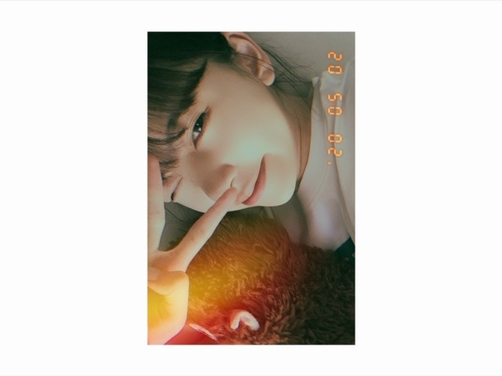
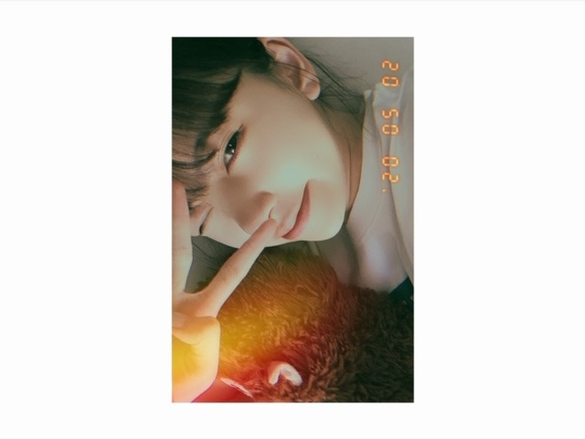

2020/0503Sunあでぃおす！
こんちは！



名前なににしよかな〜(まだ悩んでる)
コメント読みながら考え中(たまに優柔不断)
いつもコメントありがとうございます！
この間読もうとブログ開いたらちょうど
2222件でびっくりしました☺︎
いまわたしにできることはSNSを通して
みなさんに少しでも繋がっていることを
感じてもらえるようにできるだけ発信すること。
内容が薄いブログばかりで
申し訳ないですがいつも読んでくださり
ありがとうございます！
早く会える日を楽しみにしています...☺︎
こんちは！

名前なににしよかな〜(まだ悩んでる)
コメント読みながら考え中(たまに優柔不断)
いつもコメントありがとうございます！
この間読もうとブログ開いたらちょうど
2222件でびっくりしました☺︎
いまわたしにできることはSNSを通して
みなさんに少しでも繋がっていることを
感じてもらえるようにできるだけ発信すること。
内容が薄いブログばかりで
申し訳ないですがいつも読んでくださり
ありがとうございます！
早く会える日を楽しみにしています...☺︎
2020/05/03 14:18


コメント(696)
堀未央奈さん
ブログ更新ありがとう⁉︎
お猿さんの名前
楽しみにしときます⁉︎
沢山写真ありがとう⁉︎
おかげで楽しい
おうち時間です⁉︎(^^)
きっとお猿さんも喜んでくれるよ！
ﾊﾞｲﾊﾞｲ(ヾ(´・ω・｀)
高校2年生のふうかです！認知してもらえるように頑張るね！
未央奈ちゃんは、乃木坂メンバーの中でも1番と言っていいくらいSNSを通じてファンのみなさんとコミュニケーションを取ろうとしてくれててほんとに嬉しいんです
未央奈ちゃんのブログやインスタの投稿、ストーリーを見てどれだけ元気を貰ったことか 計り知れないです！
お猿さんのお名前、ナバナ君と、野木君！
昨日のコメント見てくれたかな。。。？
意味はそちらに書いております！
ウッキー君も、いいかも！！
お猿さんってウキーって鳴くよね〜笑！！
未央奈ちゃんいつもありがとう！！大好きだよぉ♥️
〜ふうかより〜
決まったら教えてほしいーなぁー。
コロナの影響でなかなか観れないので
明るい笑顔の堀未央奈さんが、みれますように。
お願いします。ブログ更新待ってます。
でも、折角沢山更新してくれているのに、こちらがコメント毎回出来なくてごめんね～。
毎回更新のたびに読んでるだけどね～。
堀さんっ♪
ブログ更新、本当にありがとうございます！
毎日のように発信して下さって、感謝しかありませんし、
内容が薄いだなんて、とんでもないです！
今のこのご時世、堀さんがこうして発信して下さることで、
我々ファンが、どれだけ救われていることか…。
改めて、本当に感謝しかありません。
ありがとうございます！
愛を込めて…
アディオス・アミーゴ！
ブロガー堀プロ最高最強至高孤高！！！！！！！！！！！！！！！！！！
も一度。 未央奈ちゃん更新ありがとう！
サルはモンちゃんとかウッキーくんとか
どうかな？在り来りだけど
名前とかからならほりっきーとかどうかな？？
アディオス！
俺だって速く会いたいです!
『ブディンくん』どうでしょう！笑
ファンからしたらどんな内容だとしても更新してくれることが嬉しいです！お体に気をつけてくださいませ！！！
さすがです！
コロナが治まったら握手会行くね〜
野球をやっているので握手会を楽しみにしながら野球頑張ります！(寮なので行けるか分からないけど)帰ってきてたら絶対握手会行きます！
未央奈がこまめにブログやモバメを更新してくれているのでそれを読んで頑張ろうという元気をもらってます。これからもずっと応援してます。頑張ってください。
黒豆より茶豆(^^)
いつもブログありがとう
お猿さんと未央奈のツーショット好き！
毎日未央奈のブログ楽しみに読ませてもらってるよ！
いつも沢山の投稿本当にありがとう！
ありのままの未央奈本当に大好きです！
僕も早く会いたいです(>_<)
全て収束したらまた会いに行くね！
今はできることをお互いに頑張ろうね！
今日もお疲れ様！
次のブログも楽しみに待ってるね！
みなみおなであるときの未央奈とみなみはめっちゃ輝いているので2人の思い出話とかを楽しみにしているのでできれば少しでもいいからブログに書いてくれないかなぁ〜？
この期間はそういうのでも心が癒されます
さくらちゃんとあやめちゃんとでんちゃんと同じ愛知県出身の覇王です！
お猿さんの名前どうなるか、めっちゃ楽しみだよ！
焦らず、ゆっくり考えて決めてね！
体調を崩さないように気をつけて頑張ってください！
応援してます！
名前決めるの難しいよね
私も優柔不断だからその気持ちわかるよ
全然内容薄くないよ～
ではまた(*´∇｀*)
ほりちゃんの繋がろうとして
くれている気持ち、ほんとに
嬉しいし素晴らしいです
全然内容薄くなんかないよ！
毎回、毎日のように更新してくれて
ホントに嬉しいです！
ありがとう！
前回のコメントにも書きましたが…
栗色の感じと目がくりくり
なので、フワちゃんぽく
くりちゃん！
早く名前決まるといいね！
次回の更新も楽しみに待ってます！
では！
おやすみおな〜！！
お人形の猿ちゃんもかわいい
こんばんは、未央奈ちゃん。
悩みおなちゃんも可愛い～！笑笑
私も優柔不断なの！一緒で嬉しい～！笑笑
そこまで未央奈ちゃんに大切に想って貰えて、お猿さんも幸せだと思うよ。p(^-^)q
今の自粛宣言中は、未央奈ちゃんの「胸キュンスカッと」と「堀熱大陸」を何回も観直して、未央奈ちゃんを見習って、私には何が足りないのかをちゃんと考えているの。本当に勉強になるんだp(^-^)q
「堀熱大陸」で、「やっぱりアイドルってブログが必要不可欠だと思う。」、「発信力とかそういう物は凄く大切にしています。」って言ってくれてたから、本当にその通りにされてて凄いなあって‥。「有言実行で一貫性」があって本当に格好いいなあって。(*´∀｀*)ﾎﾟｯ
ファンの皆さんのコメント全部読むって本当に偉いなあ。簡単そうに見えるけど、実際は結構大変だと思うから感心しちゃうなあ。(*^^*ゞ
ブログの内容の事は「何でも嬉しい」し、きっと「ファンの皆さんもその想いは一緒」だと思うから気にしないで良いと思うよ。p(^-^)q
明日にもし行けたら、美容院で未央奈ちゃんカットに切ってくるの。
いつも未央奈ちゃんとお揃いの髪型をお願いするのが凄く楽しみで(^-^*)
もうすぐ写真集発売されるね！凄く楽しみ！絶対に買うね！笑笑 (^-^*)
歌で「ヒトリエ」さんの「ポラリス」という曲があって、歌詞に「出会いの数は1つで良い。君がそこに居さえすれば良い。」、「きっとあなたは大丈夫、とても強い人だから。」、「その言葉の奥で笑う顔、いつも救われていたの。」
、「また一歩足を踏み出して、(その一歩足を踏み出した)あなたはとても強い人。」「また一歩足を踏み出して、あなたはとても強いから。」っていう凄く良い歌詞でとっても素敵な歌だからまた良かったら聴いてみてね。(^-^*)
ナルトのヒナタちゃんがナルト君を、ボルトのミツキ君がボルト君を一途に想う様に、私が未央奈ちゃんの事を一途に大切に想っている気持ちがいっぱい伝われば嬉しいなあ。(*ov.v)o
出会いの数は1つで良き！笑笑 (^-^*)
芸能界は色々と大変だと思うけど、その分きっと楽しい事も多いと思うから、嫌な事があったり、辛い事があったとしても、最後まで諦めないで頑張ってね！p(^-^)q
未央奈ちゃんにメッセージを贈らせて貰う前に、私のメッセージ内容をプレビューで見て、スクリーンショットして、SDカードに保存しているの。そして、それを大切にして、私の個人のタイムラインに載せたりしたら、私の家族とか友達とかに私の未央奈ちゃんに対する想いとかも伝わるかなって思って。(^-^*)
未央奈ちゃんのブログも時々SDカードに保存しているよ！
この時の「嬉しさとか思いを何1つとして無駄にしたくないし、全部が当たり前じゃないし、全部忘れたくなくて。」(；ω；)
未央奈ちゃん、大好き
人形の名前なんですが 番組でも出たほりっぴーはどうですか？
懐かしいし愛着湧くと思いますまいやんのことも思い出せると思います自分はほりっぴーを推奨します
猿さんの名前はピスタチオ！
アイドルの鑑！
関係ないですけど、お勧めテレビ ＮＨＫ－ＢＳ
「駅ピアノ」「空港ピアノ」
明日は、雨ですけど、人に会わなければいいので、
この際に、ガッツリ、ランニング 筋トレ、
毎日してみてはいかがでしょうか。
自分は、ここ２日する予定です。
ブログの更新が楽しみ
今は『美食探偵』を見てます
アディーオ
今日バイトつっかれた〜
死にそうやった。笑
2222おめでとうー！
未央奈ほぼ毎日ブログくれるから
毎日楽しみに頑張れます！
これからも大変だけど頑張ってね！
体に気をつけて！
無理しないように！！！
おやすみー！
ばいばいいい！！
あ、名前はトゥーリオ君か、ペッカちゃんで！笑
またまた可愛い写真ばかり、ありがとうございます！
名前、トトポス君とかいかがですか☆
いや、既に他の子につけてる可能性もある、、、
優柔不断、悪い事ではないです☆
候補が沢山あって悩むでしょうし、自分で考えたいという思いもまた生まれるでしょうし☆
真剣に考えてるという事です☆
その子の為にも、きちんと決めてあげたいですね！
慶次郎でした。
ラーメン好きやし
めん吉
お名前ですが "キッシュくん" はいかがでしょうか？
名前「堀茶太郎」
通称「ちゃた」
ではでは。
高校生でもいい感じ
内容なんか薄くないですよ
コメントする